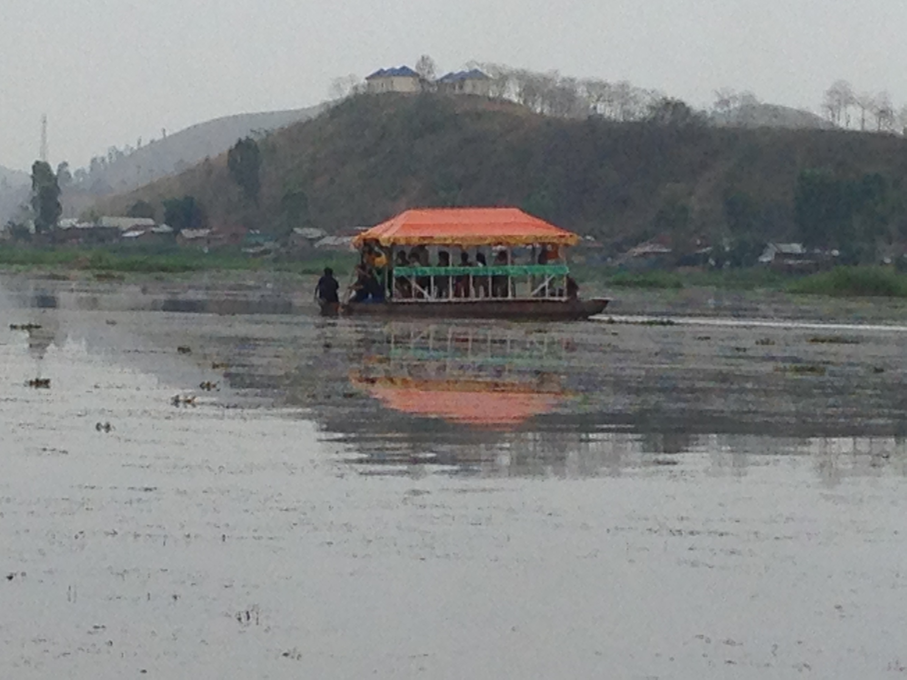
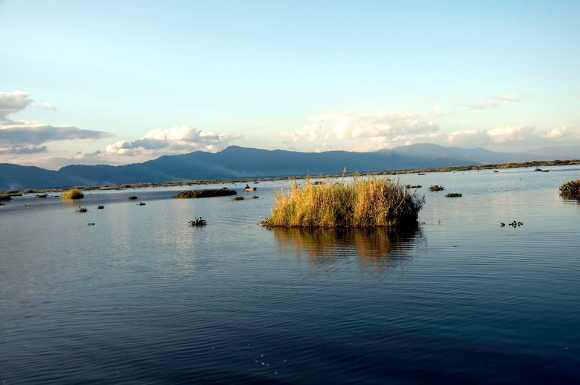
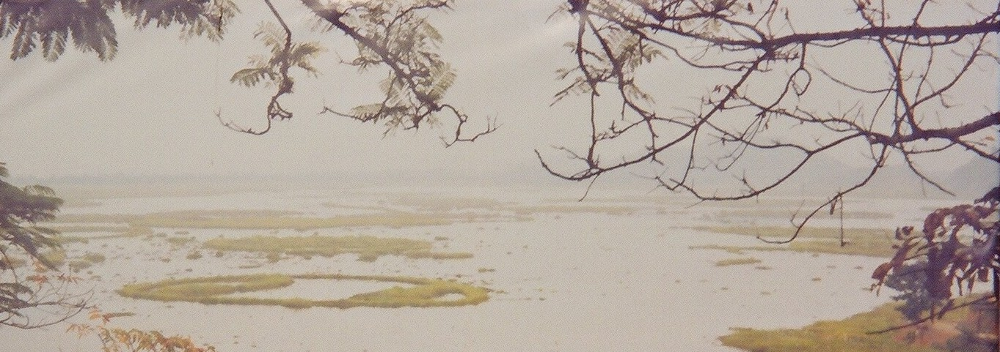
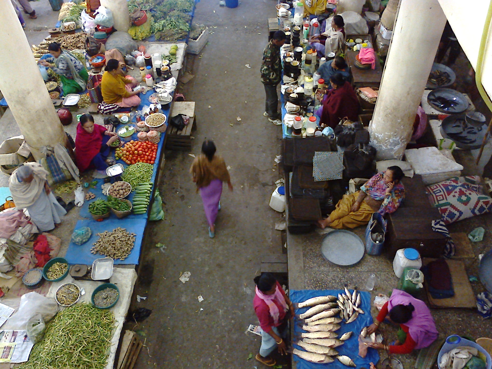
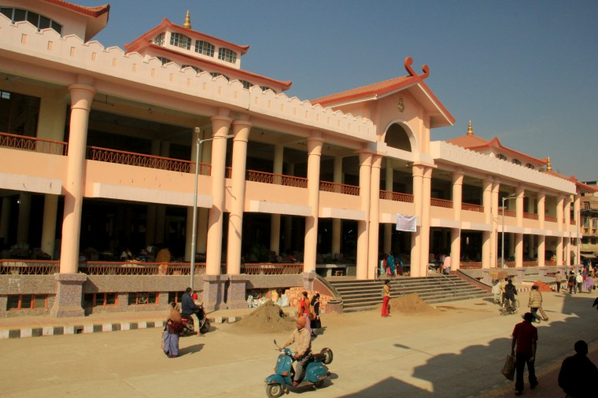
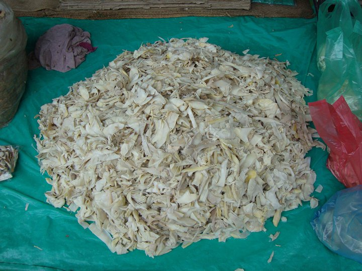
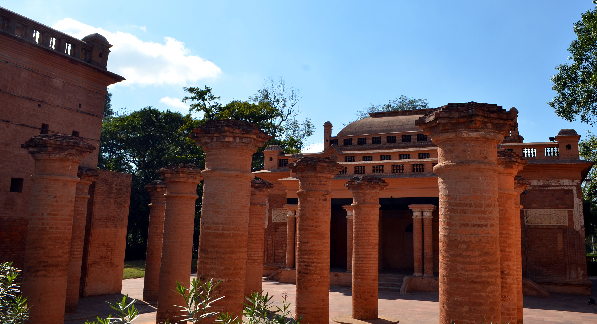
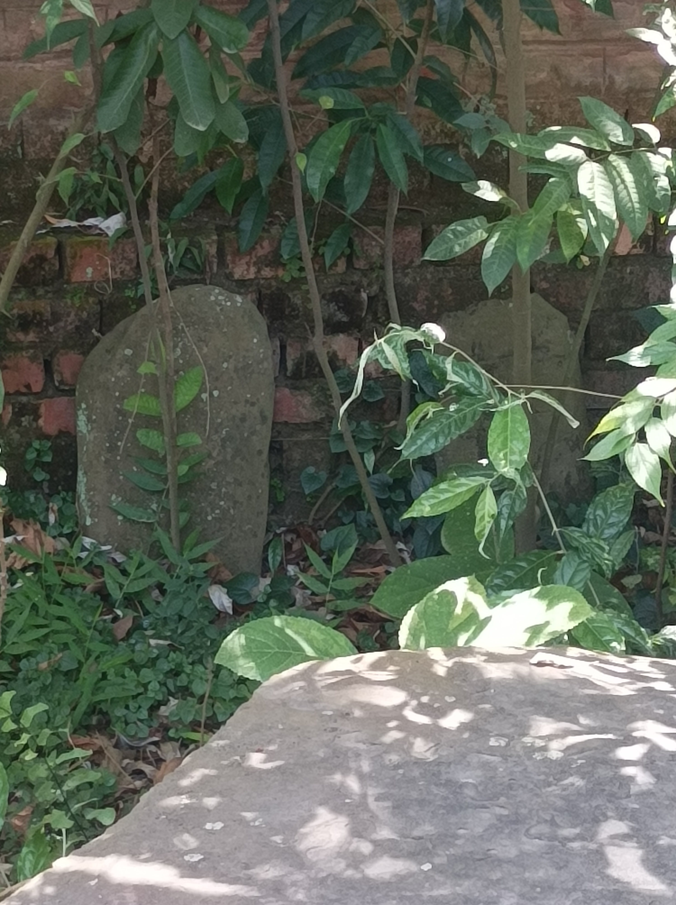

"Manipur — the 'Jewel of India' — is a state of extraordinary contrasts. Home to the only floating national park in the world (Keibul Lamjao), the legendary Ima Keithel women's market, and the birthplace of polo."
"मणिपुर — 'भारत का गहना' — अद्वितीय विरोधाभासों का राज्य है। दुनिया का एकमात्र तैरता राष्ट्रीय उद्यान (कीबुल लमजाओ) और पोलो खेल की जन्मभूमि यहीं है।"
PLACES TO VISIT / घूमने के स्थान




LOKTAK LAKE
लोकटक झील और कीबुल लमजाओ
The largest freshwater lake in Northeast India, famous for its circular floating islands. Keibul Lamjao is the only floating national park.
पूर्वोत्तर भारत की सबसे बड़ी मीठे पानी की झील। फुम्दी तैरते द्वीप इसकी विशेषता हैं।




IMA KEITHEL
माताओं का बाजार
The world's only market run entirely by women — approximately 5,000 women traders operating for over 500 years.
इम्फाल का 'इमा कीथेल' दुनिया का एकमात्र बाजार है जो पूरी तरह महिलाओं द्वारा चलाया जाता है।




KANGLA FORT
कांगला किला
The ancient capital and sacred seat of Meitei kings for 2,000 years. Kangla Sa (dragon deities) are a key feature.
2,000 वर्षों तक मेइतेई राजाओं की प्राचीन राजधानी। इम्फाल नदी के किनारे स्थित।
FOOD & CUISINE / भोजन
EROMBA (एरोम्बा)
The most essential dish of Manipuri cuisine. Boiled vegetables mashed with fermented fish (ngari) and dried red chilies.
मणिपुरी व्यंजन का सबसे जरूरी पकवान। नगारी (किण्वित मछली) और सूखी लाल मिर्च के साथ उबली हुई सब्जियों को मथ लिया जाता है।
CHAMTHONG / KANGSHOI
A clear, light vegetable stew — boiled without oil with ngari. Considered one of the healthiest diets in India.
हल्की और पारदर्शी सब्जी स्टू — मणिपुरी रसोई की स्वस्थ आत्मा। बिना तेल के उबाली जाती है।
SHOPPING / खरीदारी
MOIRANG PHEE (मोइरांग फी)
Traditional Manipuri handloom fabric with intricate patterns inspired by ancient pre-Hindu Meitei epics. GI-tagged.
मोइरांग कांग्लेइरोल से प्रेरित जटिल पैटर्न वाला पारंपरिक मणिपुरी हस्तशिल्प कपड़ा।
KAUNA MAT (काउना चटाई)
Mats and baskets woven from kauna — a water reed found in Loktak Lake. Lightweight and eco-friendly.
लोकटक झील में पाई जाने वाली काउना (जल नरकट) से बुनी चटाइयाँ और टोकरियाँ। पर्यावरण अनुकूल।